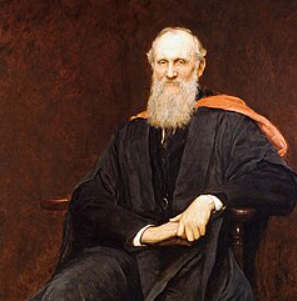

Conversor de Temperaturas
Ingresa una temperatura en grados Celsius para convertirla a Fahrenheit y Kelvin.
Convertir temperatura
Resultados
Fahrenheit: --
Kelvin: --
Escalas de temperatura
Celsius
Creada por Anders Celsius en 1742. Divide el intervalo entre la congelación y la ebullición del agua en 100 partes iguales.
- Congelación: 0 °C
- Ebullición: 100 °C
- Uso común en la mayoría de los países
Fahrenheit
Creada por Daniel Gabriel Fahrenheit en 1724. Divide el intervalo entre la congelación y la ebullición del agua en 180 partes.
- Congelación: 32 °F
- Ebullición: 212 °F
- Principalmente utilizada en Estados Unidos

Kelvin
Creada por William Thomson, conocido como Lord Kelvin, en 1848. Está basada en el concepto del cero absoluto.
- Cero absoluto: 0 K
- Equivale a -273.15 °C
- Utilizada en ciencias físicas y químicas